无RGB、无导航；红箭头/星为离线GT，橙色A，蓝色B，青色公开Anchor，灰色公开邻域。点击查看原图。
中文报告 · 逐任务结果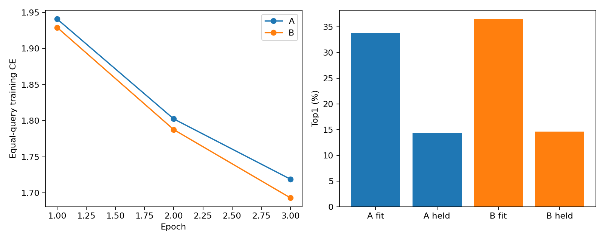
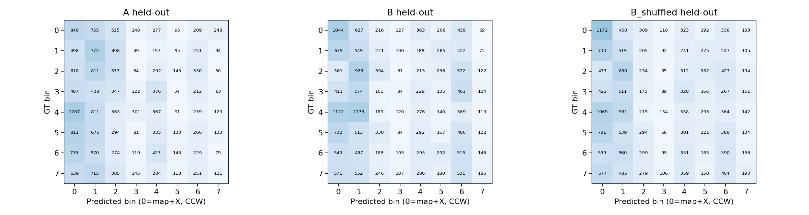
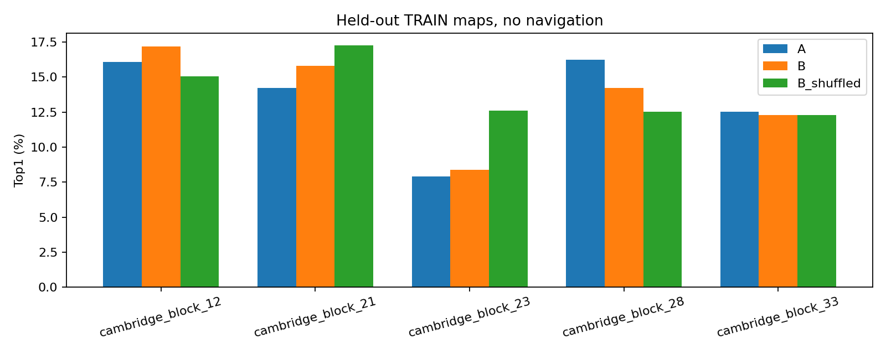
A small building with a gray roof on Tennis Court Road across the street from the Department of Pharmacology.
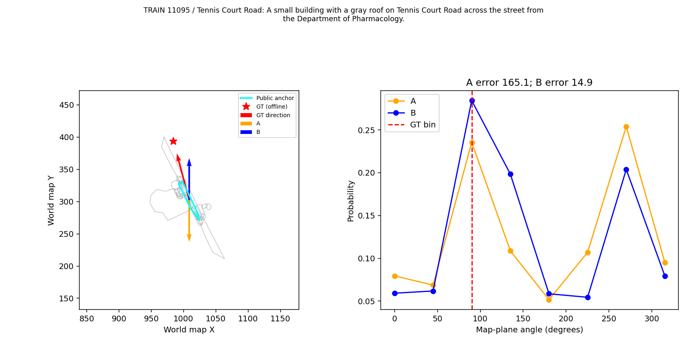
The row of gray houses along St. Peter's Terrace, across from many green trees.
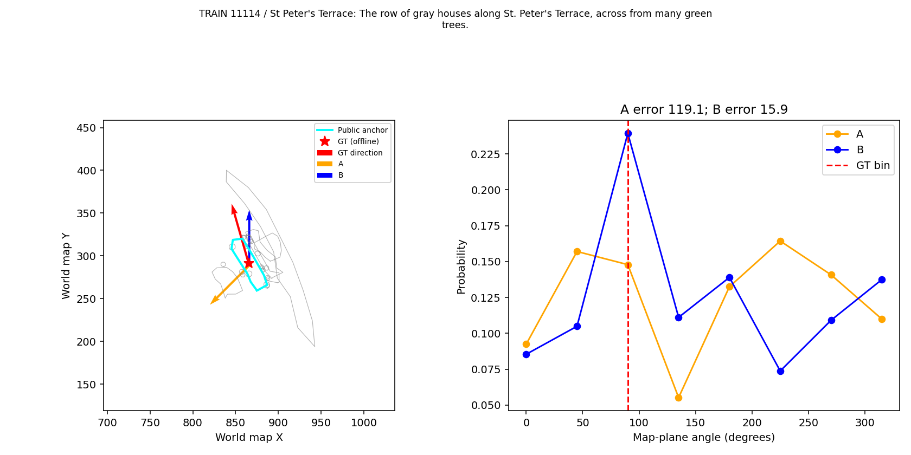
A multicolored large whites, Brown and light blue building, with a gray and light blue roof that has a large parking lot in front of the off lensfield road that is next to the chemistry of Health Building and the center for molecular informatics building
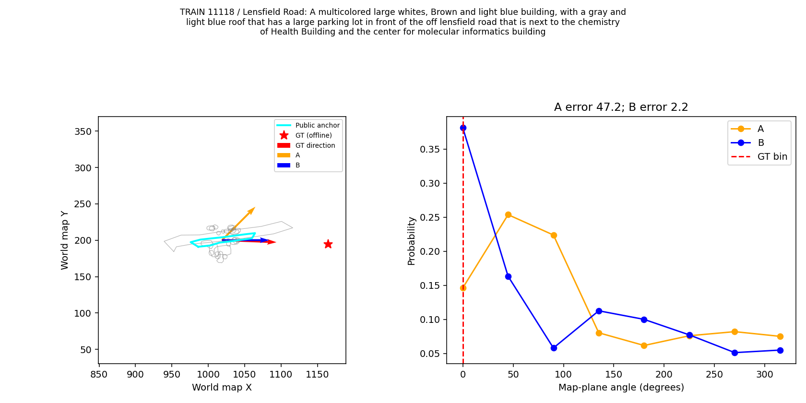
this is a building with a white roof and walls and is at the end of the Fitzwilliam Museum road, behind the Grove Lodge building.
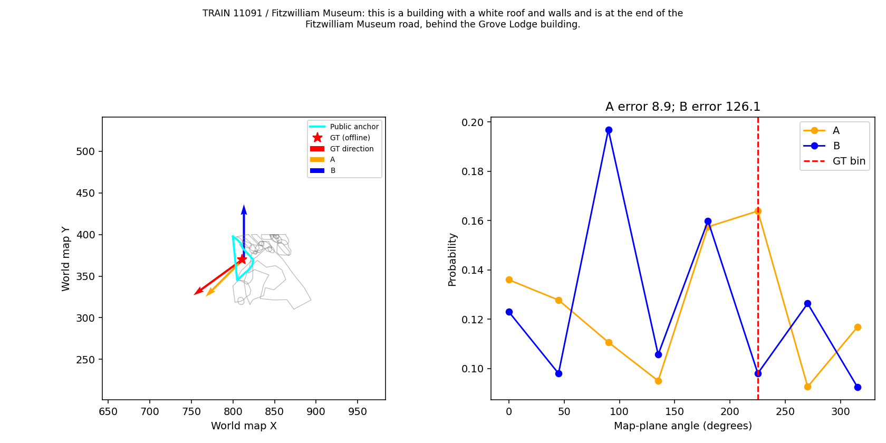
A triangular building behind the Senior combination room building along Tennis Court road. It has Dennis Hall to the left.
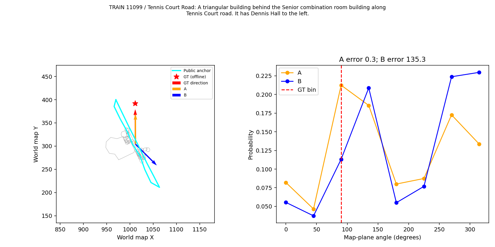
A large gray and blue building on the eastern edge that is in between Browns-Cambridge and the Central Delivery Building.
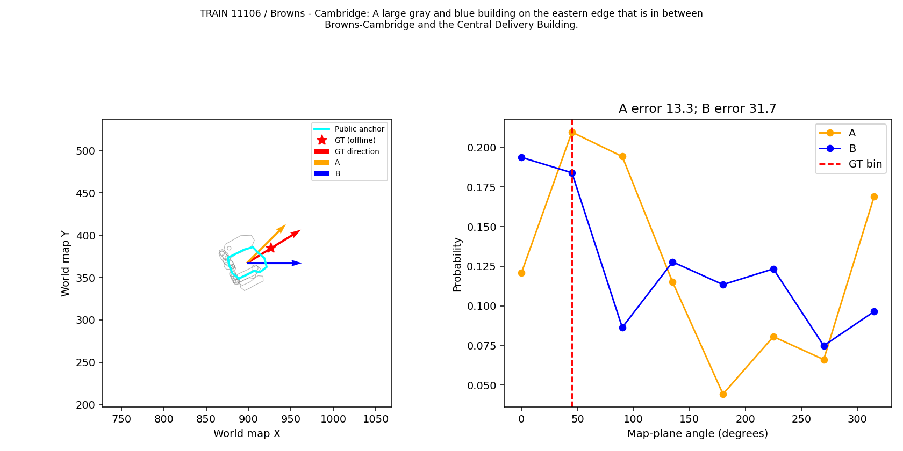
On the right side of Lensfield Road, this gray roofed building is across from Lensfield Road Cycles and The Snug.
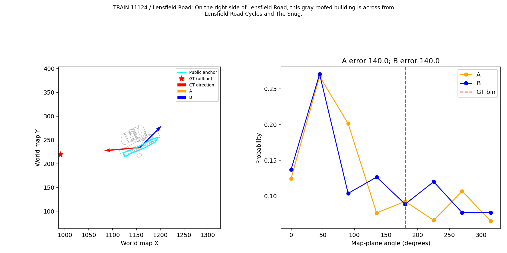
The gray square building on Lensfield Road to the right of the Cambridge Institute for Sustainability Leadership building.
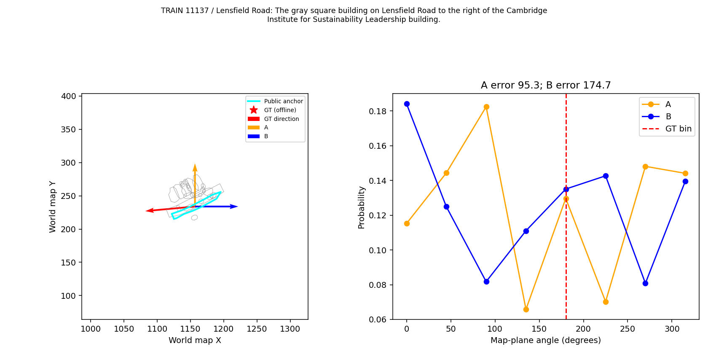
The gray building on Lensfield Road to the right of the 2 & 3 Bene't Place building.
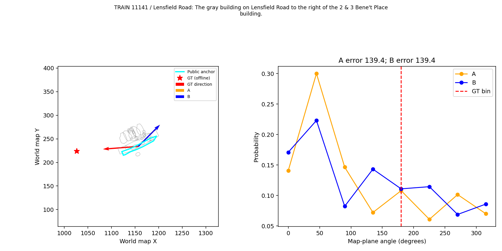
A building behind the Baker Building near the Mechanics Research Library. There is a walking bridge between this building and the Mechanics Research Library and it has a middle white flat roof between gray saw-toothed roof sections with solar panels.
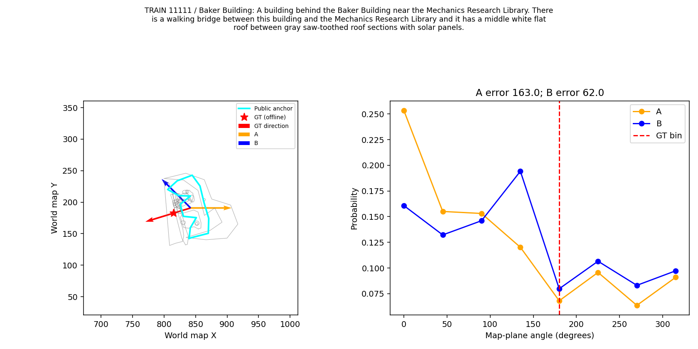
Large section of a beige building with a white and gray roof, that is behind the center for process excellence and Innovation building, and connected to the Department of pharmacology off trumpington Street
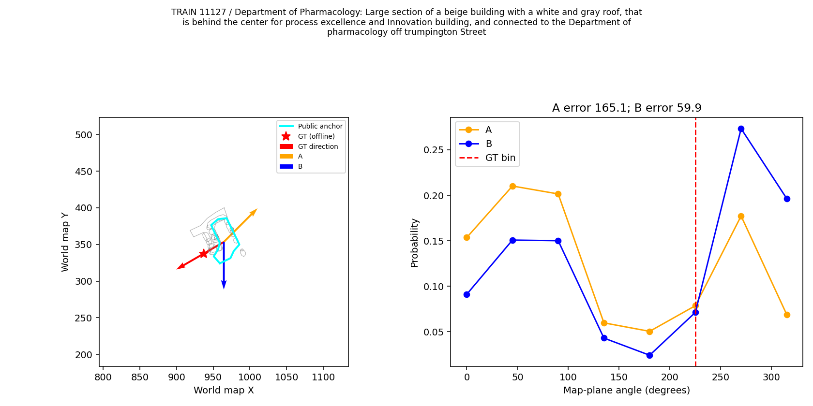
The short building behind the Cambridge Centre for Sixth Form Studies beside the big tree.
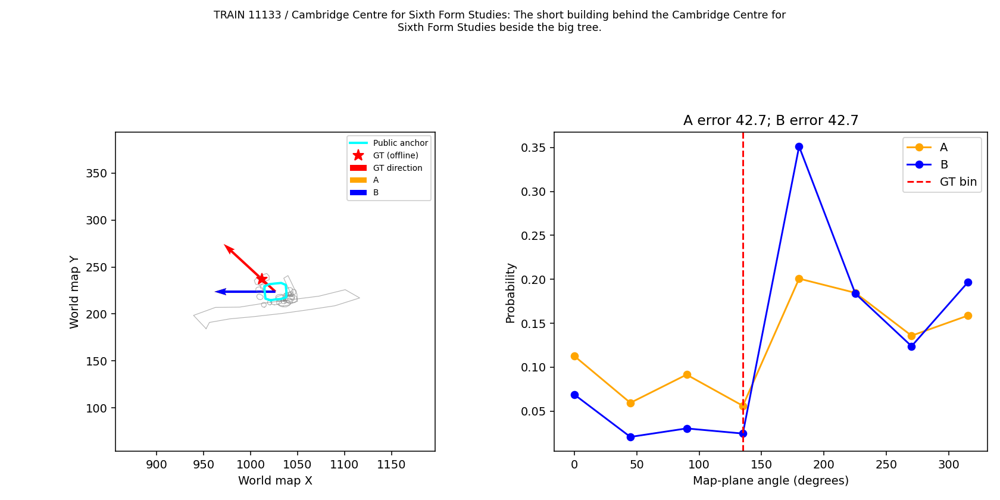
The grey white building that is between the Sanger Building and the Cambridge Centre for Sixth Form Studies.
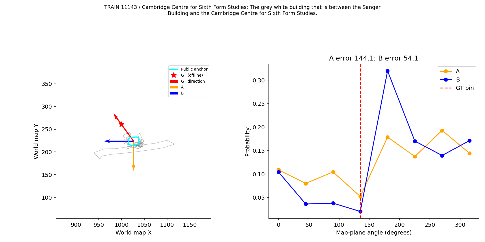
The small building between two trees that are beside the Department of Pharmacology buildling.
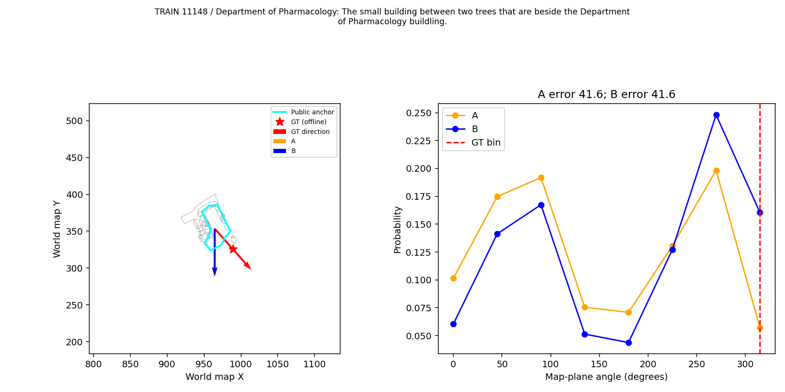
It is the building with a tree behind it. It is in between fitzwilliam museum enterprises building and Fitzwilliam education department building.
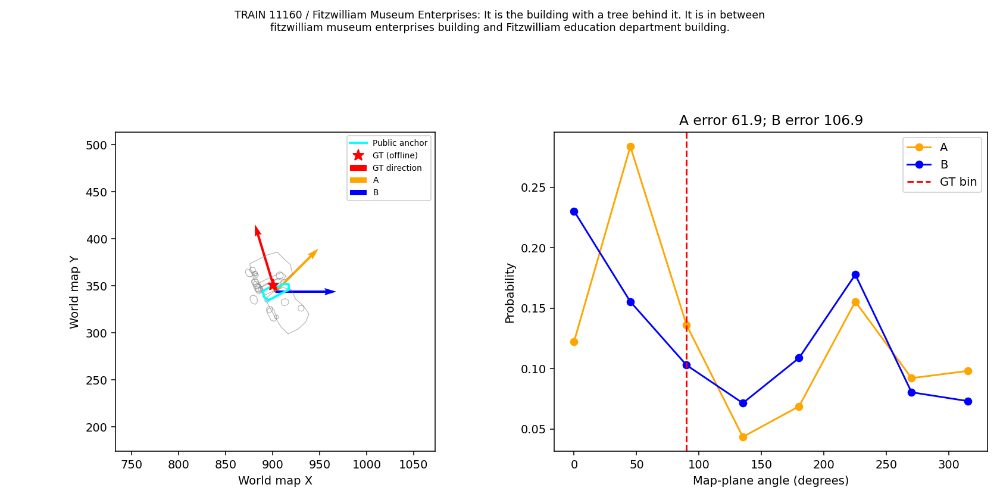